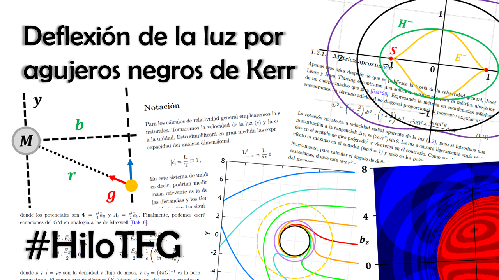
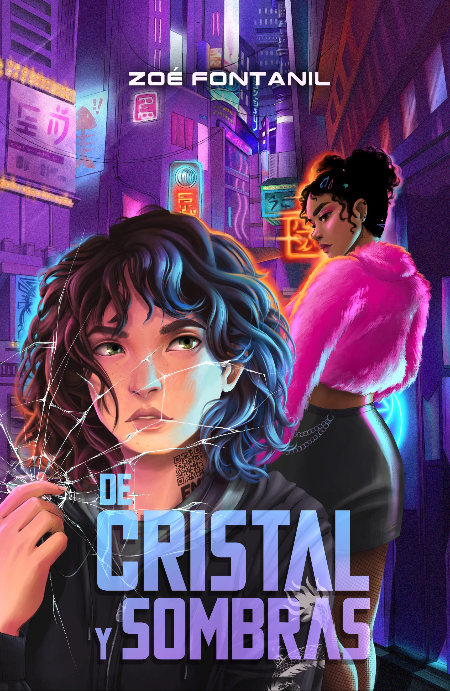
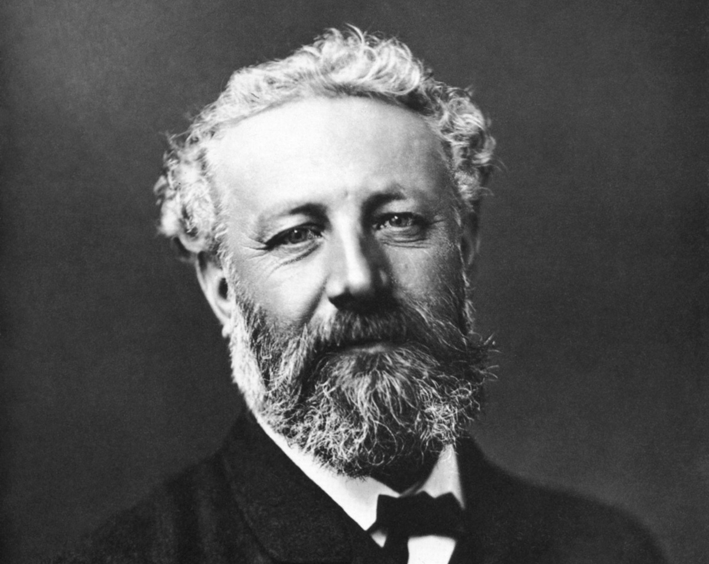

Lise Meitner: A Life in Physics
Ruth Lewin Sime
La mejor biografía que he leído. Sobre la descubridora de la fisión nuclear.
Relatos y recomendaciones
A veces escribo relatos cortos. Sobre todo para el concurso de la Facultad de Ciencias. Aquí puedes leerlos si quieres :)

La relatividad general predice que la gravedad afecta a los rayos de luz a pesar de que no tengan masa. En este trabajo se analiza cómo se curva la luz cuando pasa cerca de un agujero negro, y en particular se estudian los efectos que tiene la rotación del mismo sobre esta deflexión.
Mi TFG puede consultarse en el repositorio Zaguan:
Deflexión de la luz por agujeros negros de Kerr
Y también en formato hilo en BlueSky .
Ruth Lewin Sime
La mejor biografía que he leído. Sobre la descubridora de la fisión nuclear.

Zoé Fontanil
La mejor saga que he leído. Distopía futurista ambientada en España.
Web de la autora
20 000 leguas de viaje submarino, Los hijos del Capitán Grant, La isla misteriosa, De la Tierra a la Luna...
Para mí, la mejor ciencia ficción.